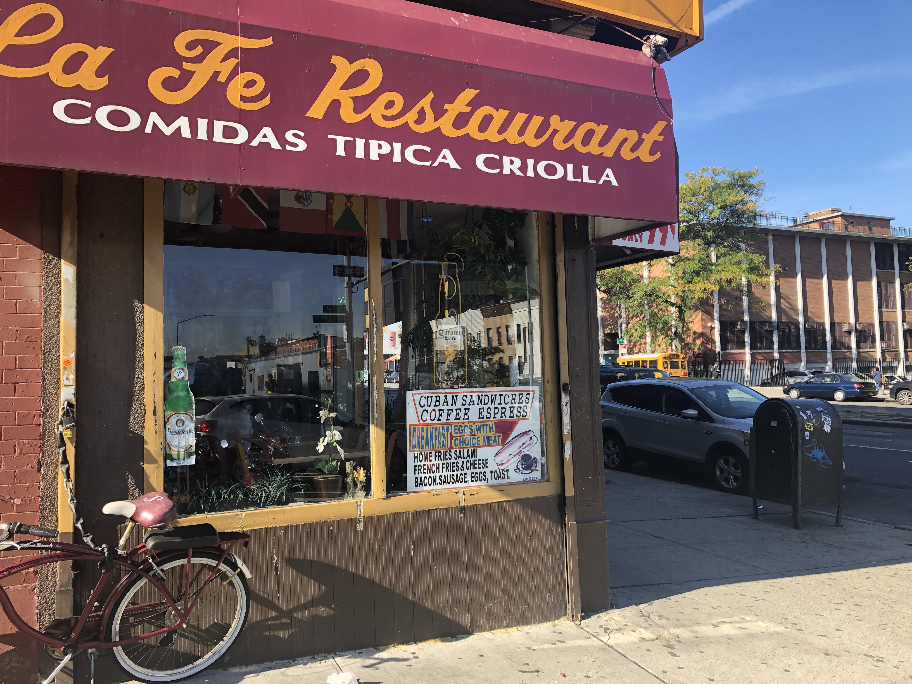

Un patio en Industry City
Un café en Industry City

Un restaurant en Sunset Park
Viendo hacia Manhattan desde Sunset Park
Por: Ana Lucía Murillo
Esta semana fue una montaña rusa de emociones en el barrio de Sunset Park en Brooklyn. Y todo a causa de Industry City y el concejal Carlos Menchaca. El concejal intentó anunciar sus ideas sobre la expansión de Industry City el lunes. El proyecto controversial busca convertir una zona industrial en un espacio con restaurantes, bares, tiendas y más. Pero en vez de una reunión de business as usual, Menchaca se enfrentó con cientas de personas, y tantos gritos de “¡Proteje a Sunset Park”! Y “¡No rezoning!” que se fue.
El tema de Industry City se ha puesto duro. De un lado están los que critican el plan de desarrollo y temen que el proyecto haga que el precio de vivienda en Sunset Park suba y la gente de clase trabajadora no pueda quedarse. Pero los que apoyan al proyecto dicen que este traerá empleos al área.
Pero, ¿cual es la realidad? Industry City lleva seis años desde que fue comprada y empezaron a abrirse nuevas tiendas y compañías. ¿Se han desplazado personas? ¿O ha ayudado a la comunidad, una comunidad donde casi el 30% de personas viven en pobreza?
Un patio en Industry City
Un café en Industry City
Un restaurant en Sunset Park
La junta comunitaria pidió que NYU Wagner hiciera un estudio para medir el impacto de Industry City en la vivienda de Sunset Park. NYU publicó el estudio este mayo, y sus conclusiones son negativas. Según el American Community Survey, los residentes de Sunset Park batallan para pagar sus rentas más que casi cualquier otro barrio en Brooklyn. Y según el estudio de NYU Wagner, “La correlación de bajos ingresos, altas rentas, altos niveles de migración residencial, y sobrecarga de renta más extrema que Brooklyn en general, hace que los residentes del área sean extremadamente vulnerable al posible desplazamiento”.
NYU advierte que la demografía del barrio donde solo el 25 por ciento tiene bachillerato, implica que mucha gente no está calificada para la mayoría de los trabajos en Industry City.
Eso cuaja con lo que dijo el CEO de Industry City, Andrew Kimball, hace unos meses- alrededor de 10% de los 7,500 empleados en Industry City viven en Sunset Park. “Los hechos importan… Y hay unos hechos con que tenemos que lidiar”, dijo el chair de la junta comunitaria Cesar Zuniga este miércoles. “Vamos a realmente intentar, mientras seguimos por este proceso, de separar los hechos de las opiniones”.
En esa misma reunión de la junta comunitaria, la residenta Claudia Galicia, dijo, “Cuando estamos peleando, Industry City gana…. No nos queremos seguir atacando… Simplemente estamos en un momento de desesperación… Necesitamos saber dónde están. Si es un “sí” o es un “no.” Porque eso es lo que a todos nos tiene con el corazón en la mano”. Hasta hoy el concejal Menchaca sigue debatiendo con Industry City sobre el plan de expansión. Su opinión tiene el poder de parar la expansión de Industry City, pero hasta ahora, no sabemos si es un “sí” o si es un “no”.